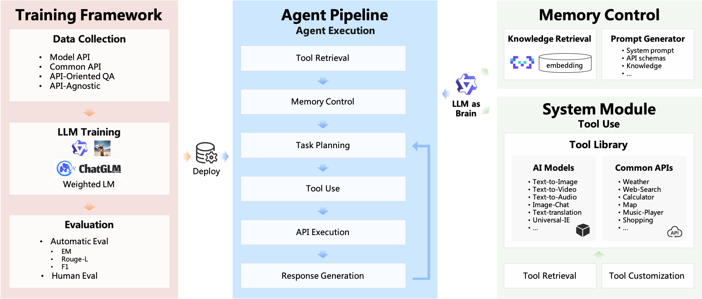
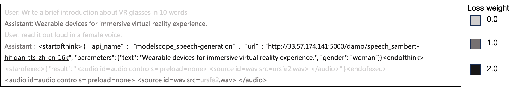
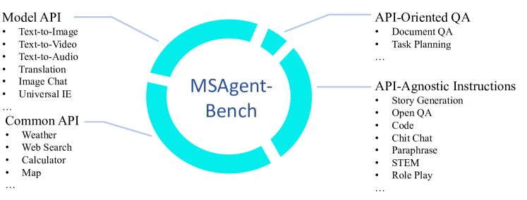
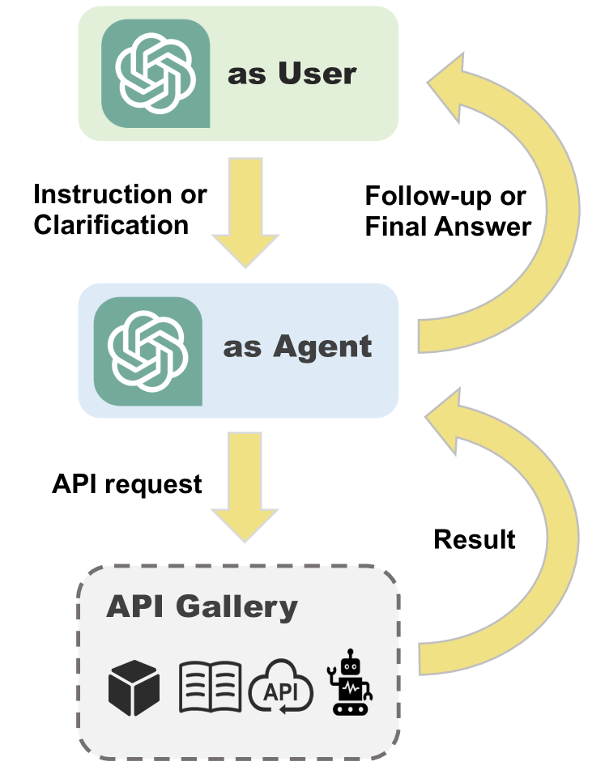
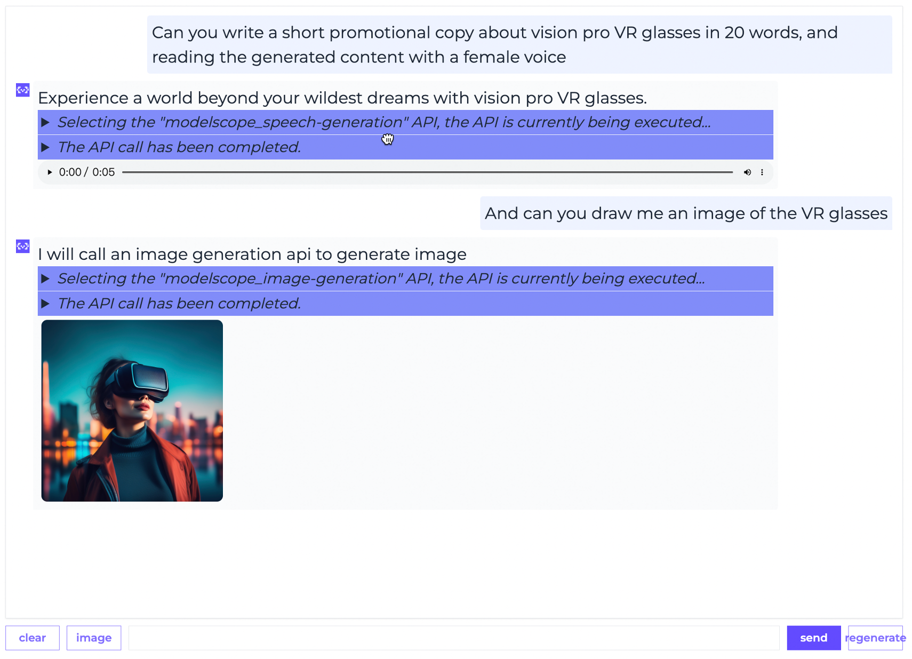
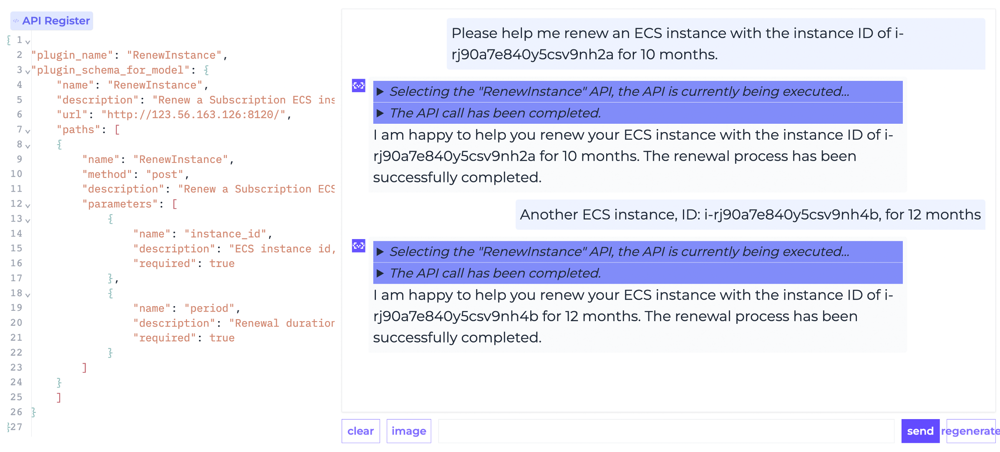

ModelScope-Agent: Building Your Customizable Agent System with Open-source Large Language Models
这篇论文不是只提出一个 prompt trick，而是把 open-source LLM agent 做成一套可定制系统：LLM controller、tool library / registration / retrieval、memory、tool-use 数据生成、Weighted LM 训练、自动评测和真实应用 ModelScopeGPT 被放在同一条工程链路里。
1. 研究动机
论文的出发点很实际：当时 Auto-GPT、LangChain、Transformers Agent、HuggingGPT 等系统已经证明 LLM controller + tools 很有用，但很多 agent 依赖闭源 LLM，或者只覆盖单一 API 类型。ModelScope-Agent 想回答的问题是：如何用 open-source LLM 构建一个可训练、可扩展、可接入真实模型市场和业务 API 的 agent system。
闭源依赖
已有 agent 多数围绕 ChatGPT / GPT-4 做 prompt orchestration，open-source LLM 如何学会稳定选择工具、填参数、处理返回结果仍缺少完整框架。
工具类型割裂
Gorilla / GPT4Tools 偏 model API，ToolAlpaca / ToolLLaMA 偏 common API。真实应用需要同时支持 neural model APIs、搜索/检索等 common APIs，以及用户自定义 API。
训练与评测缺位
仅有 framework 不能让本地模型可靠用工具。作者补了 MSAgent-Bench、Weighted LM、MSAgent-Eval 和 Agent Arena，把 agent 从 demo 推向可迭代训练。
一句话 thesis
ModelScope-Agent 的核心贡献是把 agent 运行时组件和 tool-learning 数据/训练/评测连起来，让开源模型也能作为可定制 agent controller 接入大规模 API 生态。
2. 系统架构与算法流程
系统由三层组成：LLM controller 负责规划、工具选择和结果整合；tool-use module 负责 tool library、tool registration、tool retrieval 与 execution；memory module 负责 knowledge retrieval 与 prompt generator。运行时不是把全部工具塞进 prompt，而是先检索候选工具，再把相关 schema 与上下文拼成新 instruction。
LLM Controller
可配置 LLaMA、ChatGLM、ChatPLUG、Qwen 或自定义 LLM；通过 model_name 与 model_config 切换。
Tool Library
统一管理 common APIs 与 model APIs；每个 tool 包含 API name、description、parameters 和 request functions。
Tool Retrieval
把用户 instruction 与 API description 向量化，按向量内积取 top-3 工具，把 schema 放入后续 prompt。
Memory Control
检索本地知识，组合 system prompt、API schema、knowledge、conversation history 与 few-shot examples。
Agent Pipeline
agent.run 让 LLM 生成 API request，agent 执行并把结果返回给 LLM；若需要多步调用则循环。


Tool retrieval 与 prompt assembly
设用户指令为 $q$，第 $i$ 个 API 描述为 $d_i$，embedding function 为 $e(\cdot)$。论文描述为 dense vector retrieval，可写成：
$$s_i=e(q)^\top e(d_i),\qquad \mathcal{A}_q=\operatorname{TopK}_{i=1}^{3}(s_i).$$Memory module 生成给 LLM 的输入，实质是一个 prompt generator：
$$x_t=G(s_{\mathrm{sys}},H_t,K_q,\mathcal{S}(\mathcal{A}_q),E),$$其中 $s_{\mathrm{sys}}$ 是 system prompt，$H_t$ 是 conversation history，$K_q$ 是 retrieved knowledge，$\mathcal{S}(\mathcal{A}_q)$ 是检索出的 API schema，$E$ 是 few-shot examples。
Weighted LM
普通 instruction tuning 对所有 assistant token 同等加权，但 tool-use agent 更关心 API name、parameters、URL 这类可验证字段。论文给出三档权重：user prompt 和 tool execution 的 loss 置零，普通 assistant 文本权重为 1，关键 API calling token 权重为 2。
$$\mathcal{L}(\theta)=-\sum_{t=1}^{T}w_t\log p_\theta(y_t\mid y_{| 默认工具 | 描述 | 类型 |
|---|---|---|
| Text-to-Image(en/zh) | Converts text to an image. | Model API |
| Text-to-Video(en) | Converts text to a video. | Model API |
| Text-to-Audio(en/zh) | Converts text to audio. | Model API |
| Image-Chat(en) | Image chat. | Model API |
| Translation-zh2en / en2zh | Translates Chinese text to English / English text to Chinese. | Model API |
| Universal-IE(zh), Text-to-Geographic(zh), NER(zh) | Extracts structured, geographic, or named-entity information. | Model API |
| API-Retrieval | Retrieves relevant APIs. | Common API |
| ModelScope-Retrieval | Retrieves ModelScope docs. | Common API |
Table 2 重建。论文默认工具列表刻意混合了 model APIs 与 common APIs，并标注部分工具的输入语言。
3. 训练数据、评测与复现细节
论文的训练数据叫 MSAgent-Bench，共 598K dialogues。数据来源包括 ChatGPT synthetic data 与已有 instruction-following datasets；覆盖中英双语、多种 API、multi-turn API calls、API-Oriented QA 和 API-Agnostic Instructions。评测系统 MSAgent-Eval 同时包含自动评测和 Agent Arena 人评。
数据生成
作者用两个 ChatGPT（gpt-3.5-turbo）模拟 user 与 agent，并用另一个 ChatGPT 模拟 synthetic API 返回结果，形成 user-agent-API loop。
数据过滤
过滤 ChatGPT 生成的 hallucinated API names、缺失参数、以及 illegal API requests，得到最终训练样本。
评测集
测试包含 10 个 in-domain APIs 和 10 个 unseen real APIs；最终 360 conversations、2059 text snippets、798 API requests、1261 plain text answers。
| Dataset | Language | Instance Type | # Instances | API type | Avg. Turn | Avg. Step |
|---|---|---|---|---|---|---|
| API-Bank | English | Tool Use | 264 | Common API | 3.27 | 1.92 |
| ToolAlpaca | English | Tool Use | 3.9K | Common API | 1 | 1.66 |
| Gorilla | English | Tool Use | 16.4K | Model API | 1 | 1 |
| GPT4Tools | English | Tool Use | 71.4K | Model API | 1 | 1 |
| ToolBench | English | Tool Use | 26.9K | Common API | 1 | 4.1 |
| MSAgent-Bench | English + Chinese | Tool Use + Common Chat | 598K | Common API + Model API | 1.52 | 1.31 |
Table 1 重建。MSAgent-Bench 的差异点不是只有规模，而是双语、tool use + common chat、common API + model API 的组合。
| Instance Type | # Instances | 解读 |
|---|---|---|
| Chinese | 532,436 | 中文占绝大多数，这也解释了后续 ChatGPT 2-shot 与 LLaMA 在 Action EM 上较弱的部分原因。 |
| English | 66,444 | 英语样本用于补足 bilingual ability。 |
| Common API | 211,026 | 搜索、检索、普通服务类 API。 |
| Model API | 58,338 | CV、NLP、Audio、Multi-modal 等模型调用。 |
| API-Oriented QA | 5,000 | API 文档问答与任务规划，要求 agent 知道何时用哪个 API。 |
| API-Agnostic Instruction | 329,776 | 保持普通 instruction following 与用户互动能力，避免模型只会机械调用 API。 |
Table 4 重建。各行不是互斥总和，而是从语言、API 类型和任务类型角度统计数据。
自动评测指标
Action EM 检查是否选择正确 API；ROUGE-L 衡量最终回答与 gold answer 的文本相似度；Argument F1 将参数匹配拆成 Half Match 与 Full Match。
$$R=(0.5\times\text{\# HM}+\text{\# FM})/{|A|},\qquad P=(0.5\times\text{\# HM}+\text{\# FM})/{|A^{*}|}.$$ $$F1=2(RP)/(R+P).$$其中 $|A|$ 是 gold API argument 数，$|A^{*}|$ 是 agent 生成的 argument 数；HM 表示参数名正确但值错误，FM 表示参数名和值都正确。
4. 实验结果与核心结论
自动评测结果支持两个结论：fine-tuning 明显优于仅做 in-context learning 的 ChatGPT 2-shot；在这份中文占比很高的测试集中，中文能力更强的 ChatPLUG 与 Qwen 表现明显更好，MSAgent-Qwen 达到最高 Action EM 和 Argument F1。
| Model | ROUGE-L | Action EM | Argument F1 | 阅读解读 |
|---|---|---|---|---|
| ChatGPT (2-shot) | 36.70 | 34.82 | 25.51 | 不 fine-tune，仅 2-shot ICL；在 API 选择和参数填充上弱。 |
| LLaMA | 39.16 | 58.60 | 44.98 | fine-tuned 后显著超过 ChatGPT 2-shot，但受中文测试分布影响。 |
| ChatPLUG | 46.45 | 68.29 | 55.12 | 中文数据能力更强，Action EM 与参数 F1 继续提升。 |
| MSAgent-Qwen | 51.35 | 87.23 | 68.09 | 最佳结果，作者认为与 Qwen base model 能力有关。 |
Table 3 重建。星号说明 ChatGPT 没有被 fine-tune，而是使用 2 demonstrations 做 in-context learning。
最强证据
MSAgent-Qwen 的 Action EM 为 87.23，远高于 ChatGPT 2-shot 的 34.82，说明结构化 tool-use supervision 对 API 选择很关键。
证据边界
测试集只有 360 conversations，且中文占比高。论文没有提供大规模第三方 benchmark、消融和端到端线上 A/B，因此结论更像系统可行性证明，而非通用 agent 能力定论。
ModelScopeGPT
基于 ModelScope-Agent 的真实应用，可接入 ModelScope 社区中的 NLP、CV、Audio、Multi-modal 模型与本地知识。
真实访问量
论文报告 ModelScopeGPT 发布后一个月内获得 40K user visits 和超过 170K total requests。
Unseen API
作者用阿里云 ECS 续费 API 作为用户注册新工具的案例，展示模型能根据新 schema 规划并调用未见 API。
5. Figure / Table 导航
论文图表的作用偏系统说明和案例展示。最值得看的是 Figure 1 的系统架构、Figure 4 的 Weighted LM、Figure 10 的数据生成闭环，以及 Table 1/3/4 的数据和结果。




6. 复现清单
这篇论文的代码和数据入口公开，适合做 agent framework 与 tool-use fine-tuning 的中等难度复现；但严格复现论文数字仍会受模型版本、在线 API、合成数据细节和中文评测集限制。
可复现部分
- 安装
modelscope-agent，构造AgentExecutor(llm, tool_cfg, additional_tool_list=tool_list)。 - 注册自定义
Tool，定义 name、description、parameters、_local_call()或_remote_call()。 - 复刻 top-3 tool retrieval：API description embedding 与 user instruction embedding 做相似度检索。
- 按 MSAgent-Bench fine-tune LLaMA / ChatPLUG / Qwen 风格 controller，并实现 Weighted LM loss mask。
- 用 Action EM、Argument F1、ROUGE-L 评测 API 选择、参数填充和最终回答。
主要缺口
- 论文没有完整公开每个训练 run 的 hyperparameters、random seeds、decoding settings、硬件与成本。
- 数据生成依赖
gpt-3.5-turbo与在线 API 行为，2023 年模型快照和 API 返回可能已变化。 - 评测集规模小，且 10 in-domain / 10 unseen API 的具体难度分布会影响可比性。
- ModelScopeGPT 涉及线上 ModelScope 模型服务与知识库，端到端线上表现不等同于本地框架复现。
| 复现实验 | 最小版本 | 通过标准 |
|---|---|---|
| Tool registration | 写 3 个 mock tools，覆盖必填参数、可选参数和错误返回。 | LLM 能选择正确工具，并在 schema 约束下输出合法 JSON request。 |
| Tool retrieval | 准备 50-100 个 API descriptions，比较 embedding top-k 与 BM25 / keyword baseline。 | Top-3 recall 能覆盖 gold API，且 prompt 长度明显低于全量工具注入。 |
| Weighted LM | 对同一 base model 跑 normal LM 与 Weighted LM 小规模 fine-tune。 | Action EM 与 Argument F1 提升，普通聊天 ROUGE-L 不明显下降。 |
| Unseen API generalization | 训练中不出现某类 API，测试时只给新 schema。 | 能正确识别 API 名、必填参数和参数值来源。 |
7. Reviewer Critique
Strengths
- 把 agent runtime、tool registry、retrieval、memory、training、evaluation 和 deployment 放进同一系统，工程闭环完整。
- MSAgent-Bench 不只教 API 调用，还包含 common chat 与 API-agnostic instructions，避免 agent 退化成只会调用工具的 parser。
- Weighted LM 简单但抓住了 tool-use failure 的关键：API 名称和参数 token 比普通解释文本更重要。
- ModelScopeGPT 和 Alibaba Cloud unseen API 案例让论文超出 toy benchmark，有真实应用落点。
Weaknesses
- 实验规模偏小，自动评测只有 360 conversations，缺少 ToolBench 等外部 benchmark 的系统对比。
- 没有充分 ablation：tool retrieval top-k、memory knowledge retrieval、Weighted LM 权重 2、数据类型占比各自贡献不清楚。
- 合成数据由 ChatGPT 生成，可能继承闭源模型偏差；过滤规则描述有限，难判断数据噪声和 hallucination 残留。
- 安全与可靠性讨论较浅：恶意 tool、prompt injection、权限控制、API side effects、失败重试和审计日志都没有深入实验。
- 系统代价不透明：embedding retrieval、模型 API 调用、LLM inference 的 latency / cost / throughput 没有量化。
应补消融
normal LM vs Weighted LM；无 tool retrieval vs top-1/top-3/top-5；无 memory knowledge vs 有 knowledge；只 common API vs common + model API。
应补鲁棒性
测试 tool schema 噪声、参数歧义、API 超时、错误返回、恶意 instruction、工具权限边界和多步调用中的错误传播。
应补系统指标
报告 end-to-end latency、retrieval latency、tokens per request、API failure rate、tool-call retry rate、线上用户满意度与安全事件率。
8. 对 Agent / Self-Evolution 研究的启发
这篇论文对后续 agent 研究的价值在于“把可验证结构放进训练目标”。如果一个 agent 的关键行为是 API 调用，那么训练和评测都应该围绕可验证字段展开，而不是只看最终自然语言回答。
Tool schema 是行动空间
把 API schema 检索进 prompt，相当于动态约束 action space。对大工具库 agent 来说，先检索再规划比全量工具注入更现实。
Weighted supervision
Weighted LM 提醒我们：agent 训练可以按 token 的行为后果加权。API name、parameter、URL、SQL、代码 patch 等 token 都适合更高权重或 verifier loss。
评测要拆动作
Action EM、Argument F1、ROUGE-L 的拆法比单一 success rate 更可诊断。后续可扩展为 tool selection、argument grounding、execution success、final answer faithfulness。
我的最终判断
ModelScope-Agent 是一篇偏系统与工程实践的 agent 论文，novelty 不在单点算法，而在把开源 LLM 的 tool-use 能力训练成可部署框架。它的实验严谨度不算强，但对构建可定制 agent platform、tool-use dataset 和 verifiable agent training 很有参考价值。